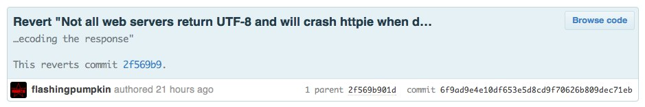

Version Control with Git
Adam Backstrom
ambackstrom@plymouth.edu
Adam Backstrom
ambackstrom@plymouth.edu
--- a/ext/standard/strnatcmp.c
+++ b/ext/standard/strnatcmp.c
@@ -105,7 +105,8
{
unsigned char ca, cb;
unsigned int ai, bi;
- int fractional, result, leading = true;
+ int fractional, result;
+ short leading = 1;
ai = bi = 0;
while (1) {
@@ -120,7 +121,7 @@
cb = b[++bi];
}
- leading = false;
+ leading = 0;
/* process run of digits */
adam@fsck:~$ patch -p1 < changes.diff
patching file ext/standard/strnatcmp.c
Hunk #4 succeeded at 56 (offset -2 lines).
A way to manage diffs.


(master)$
(master)$ vi
(master)$ git add
(master)$ git commit


(master)$ git add input
export PS1='$(__git_ps1 "(%s)")\$ '
echo "export EDITOR=vi" >> ~/.bashrc
| svn diff | git diff |
| svn status | git status |
| svn rm file | git rm file |
| svn add file | git add file |
| svn commit | git commit -av |
| svn commit | git add git commit -v |
| svn up | git pull |
| svn up | git fetch origin git rebase origin/master |
(master)$ git branch calllog-rest
(master)$ git checkout calllog-rest
(calllog-rest)$ vi index.php
...
(calllog-rest)$ git commit -av
(calllog-rest)$ git push origin HEAD


Capitalized, short (50 chars or less) summary Additional information, wrapped to 72 lines. Present tense. GitHub will convert Markdown: - List item - With *bold*
Two branches (master and dev) each with a unique commit.
(master)$ git merge dev
Merge made by recursive. index.php | 4 ++++ 1 files changed, 4 insertions(+), 0 deletions(-)
(dev)$ git rebase master
(master)$ git merge dev
Updating ff6103a..bee41c4 Fast-forward index.php | 4 ++++ 1 files changed, 4 insertions(+), 0 deletions(-)
(dev)$ git rebase master
(master)$ git merge --no-ff dev
(dev)$ git rebase master
(master)$ git merge --squash dev